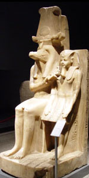

Себек або Собек, в єгипетській міфології бог води і розливу Нілу, чиїм священною твариною був крокодил. Його зображували у вигляді крокодила або у вигляді людини з головою крокодила. Центр його культу - місто Хатнечер-Себек (грец. Крокодилополь), столиця Фаюма.
Вважалося, що в озері, що примикає до головного святилища Себека, містився крокодил петсухос, як живе втілення бога. Шанувальники Себека, що шукали його захисту, пили воду з озера і годували крокодила делікатесами. У II тисячолітті до нашої ери багато царі називали себе Себекхотеп, тобто "Себек задоволений". Вважають, що стародавні сприймали Себека як головне божество, що дає родючість і достаток, а також захисника людей і богів.
Згідно з деякими міфам, бог зла Сет сховався в тілі Себека, щоб уникнути покарання за вбивство Осіріса. Себека іноді вважають сином Нейт, великої матері богів, богині війни, полювання, води і моря, якій також приписують народження жахливого змія Апопа.